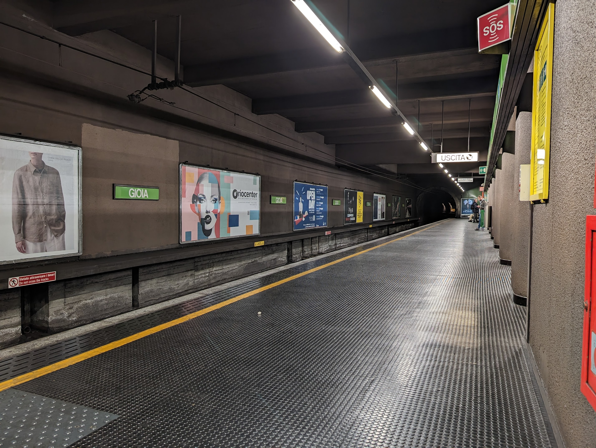

Hover or tab to the image to see the difference in the brightness of the
white areas between the standard and
no-limit values of dynamic-range-limit. To see
the difference, you'll need to view the demo on a display that supports
the full brightness range of HDR content.
